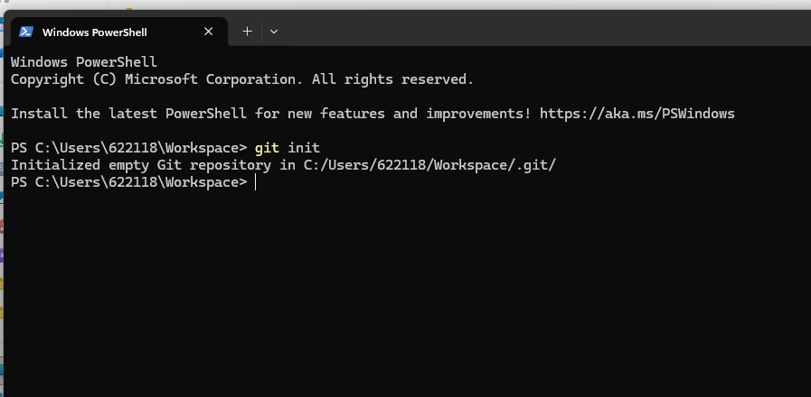
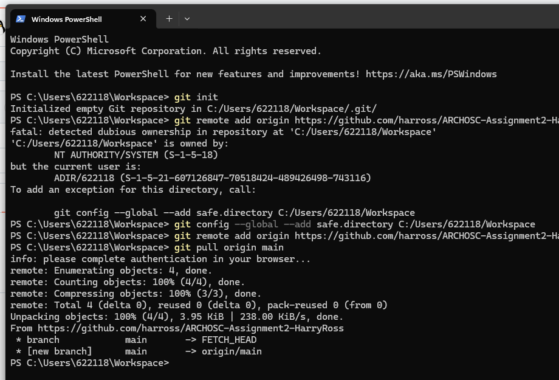
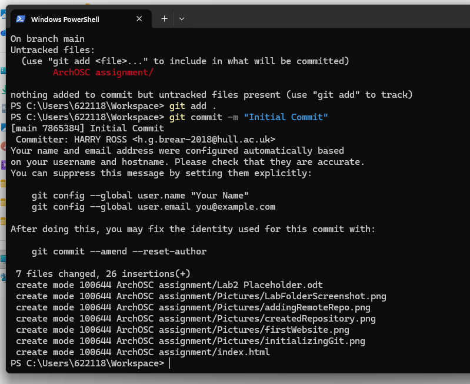

The first step of this lab was to take a screenshot of the lab folder:
Next, I used the terminal to initalize a git repository in my workspace folder:

The next step was creating a matching repo on GitHub to later store the work:
Next, I added the repository as a remote repo, and pulled the diff:

I then created a .html file to create a basic website with a centred name:
Next, I added all files in my local repo to the remote, added a commit message, and pushed the repo:

Today, I demonstrated how a local website can be created, populated, and hosted using a cloud service provider. The implications of this in industry are obvious. Businesses and services need websites, and cloud hosting is the cheapest and most efficient method.